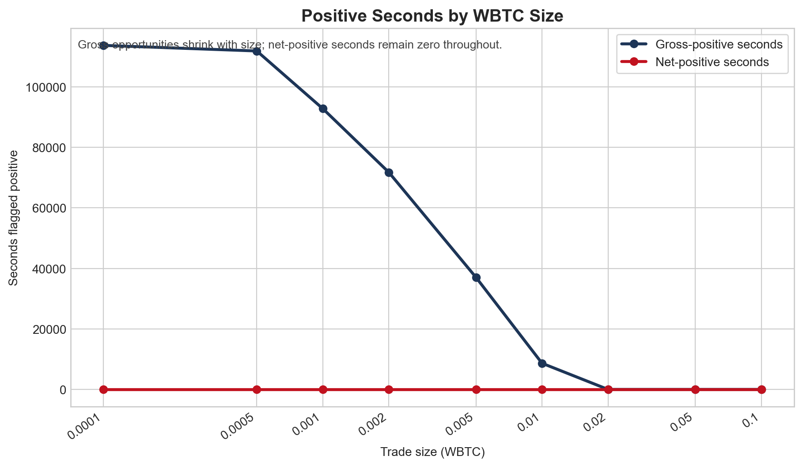
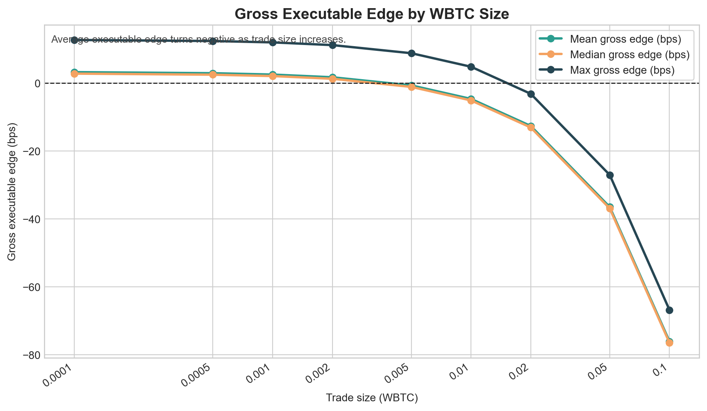
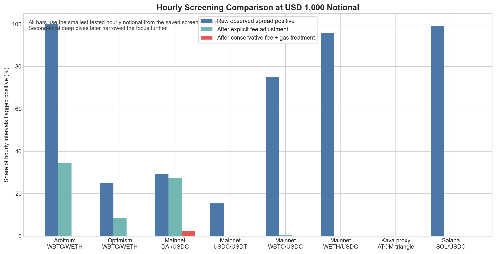
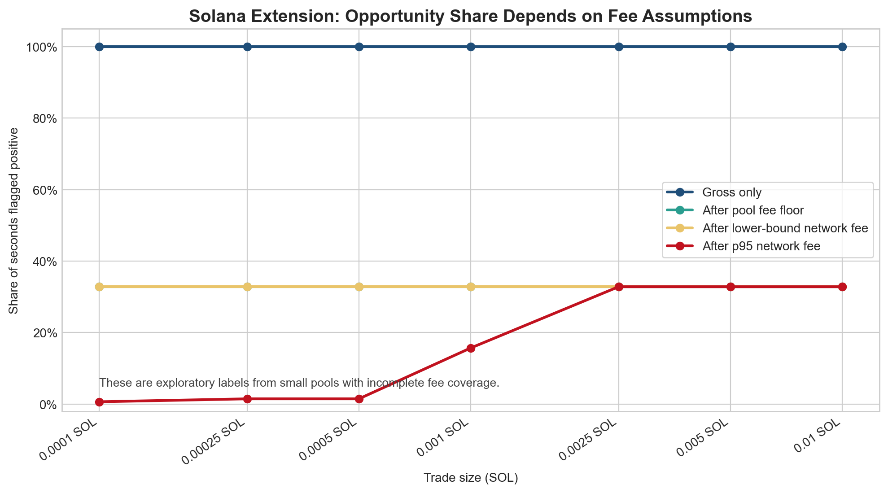
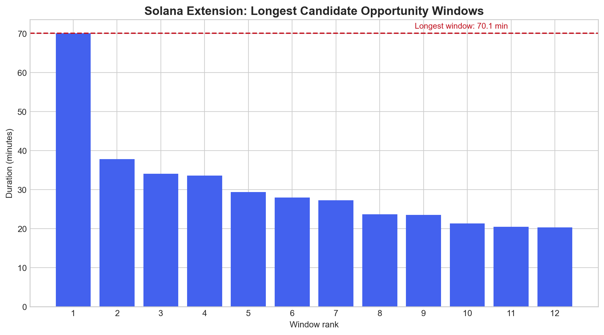
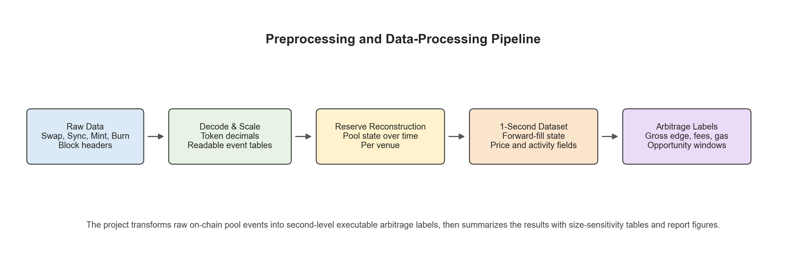

This report summarises the first half of our project. At this stage, the project is not presented as a completed trading strategy. Instead, it documents the research process, the evidence we gathered across multiple chains, pairs, and DEXs, and the conclusions we can support from the data collected so far.
Our project investigates MEV arbitrage in decentralised exchange (DEX) liquidity pools. The initial idea was to study whether temporary price differences between pools could be converted into profitable trades. In this setting, arbitrage means buying an asset from the cheaper pool and selling it into the more expensive pool before the price difference disappears.
We selected this topic because it is more specialised than a standard directional trading strategy and is closely connected to market microstructure. In automated market makers (AMMs), prices are determined by pool reserves rather than by an exchange order book. As a result, prices in individual pools can temporarily diverge from each other and from the broader market. However, it is not correct to assume that pools should always be mispriced. In practice, arbitrageurs usually push pool prices back toward equilibrium quickly, so the relevant question is whether the remaining discrepancies are large enough to survive execution costs.
The strategy we tested was cross-pool arbitrage. The economic logic is simple:
For this project, profitability depends on more than just observing a price gap. A visible gap is only the starting point. The trade remains attractive only if the gross spread is larger than:
Therefore, the true decision rule is:
Arbitrage is feasible only when the spread exceeds price impact, DEX fees, and gas/network fees.
We began with a 30-day, 1-minute screen of the WBTC/WETH market. The purpose of this first pass was simple: before building a more detailed execution dataset, we wanted to see whether the pair showed any clear arbitrage signal at a broader time horizon.
This initial screen did not show an actionable net-profitable arbitrage strategy. In other words, at the coarse screening level, WBTC/WETH did not present a convincing opportunity that justified immediate trading.
Because of that result, we changed the research design rather than stopping the project. The chronology of the first half was:
The exact venue set also changed between stages because only some pools exposed the reserve-event structure needed for reliable historical execution modelling. The broader 30-day screen is reflected in the saved hourly reporting summaries, while the later 7-day analysis is the deeper second-level execution test.
The next step was a 7-day, 1-second reserve-based analysis of WBTC/WETH on Optimism. This stage was designed to model arbitrage more realistically. Instead of only comparing quoted prices, we reconstructed pool states from on-chain events and simulated whether a hypothetical trade could actually be executed profitably after accounting for price impact, pool fees, and gas assumptions.
This higher-frequency stage is the core result for the Ethereum-style leg of the project, because it tests executable profitability rather than simply identifying a quoted price difference. It also explains why the narrative changed between the first and second screens: moving from 1-minute data to 1-second data revealed many more temporary price differences, but those extra differences still did not translate into a robust net-profitable strategy once execution costs were included.
The saved WBTC size-sensitivity output shows this very clearly:
The gross edge measures tell the same story. As WBTC trade size increased, the average executable edge deteriorated quickly:
This means the strategy looked most promising only at very small trades, but even there it still failed after full trading costs.

Figure 2. Positive seconds by WBTC size. The chart shows that gross-positive seconds were common only at very small trade sizes, while net-positive seconds remained zero throughout.

Figure 3. Gross executable edge by WBTC size. The average executable edge declines as trade size increases and turns negative once the simulated trade becomes too large relative to available pool depth.
After the WBTC/WETH screens did not produce a viable strategy, we broadened the search. This step was important because it tested whether the weak profitability was only a WBTC/WETH issue or whether the same problem appeared across other exchange combinations and other pairs.
The key screened combinations were:
| Market | Chain | Pair or Route | Main Venues / Pools Tested | Main Outcome |
|---|---|---|---|---|
| Arbitrum WBTC/WETH | Arbitrum | WBTC/WETH | SushiSwap v2, Uniswap v2 | Raw spreads appeared often, but deeper 1-second execution modelling still found no net-profitable seconds. |
| Optimism WBTC/WETH | Optimism | WBTC/WETH | Uniswap v2, Velodrome v2 | Raw spreads survived some fee adjustment in the hourly screen, but the later 1-second execution test still found zero profitable seconds. |
| Base WBTC/WETH | Base | WBTC/WETH | Aerodrome candidate market, Uniswap v3 reference market | Not carried forward as an honest reserve-based backtest because two comparable reconstructable venues were not available. |
| Ethereum Mainnet USDC/USDT | Ethereum Mainnet | USDC/USDT | Uniswap v2, SushiSwap v2 | Quote differences existed, but no positive hourly intervals remained after fee adjustment in the saved screen. |
| Ethereum Mainnet DAI/USDC | Ethereum Mainnet | DAI/USDC | Uniswap v2, SushiSwap v2 | This was the strongest mainnet hourly screen, but the advantage shrank sharply after stricter cost assumptions and disappeared at larger sizes. |
| Ethereum Mainnet WETH/USDC | Ethereum Mainnet | WETH/USDC | Uniswap v2, SushiSwap v2 | Raw spreads were common, but no positive hourly intervals remained after fee adjustment in the saved screen. |
| Ethereum Mainnet WBTC/USDC | Ethereum Mainnet | WBTC/USDC | Uniswap v2, PancakeSwap v2 | Only a very small number of fee-adjusted positives appeared, and none survived the conservative fee-and-gas treatment. |
| Cosmos proxy route | Kava EVM / Cosmos proxy | ATOM/USDt/axlUSDC triangle | Equilibre ATOM/axlUSDC, Equilibre ATOM/USDt, Equilibre USDt/axlUSDC | Produced two small positive windows in the route-based second-level screen, but profits were only a few cents. |
| Solana extension | Solana | SOL/USDC | Raydium CPMM, Meteora DAMM v2 | Produced many candidate windows under lower-bound assumptions, but the pools were too small and the fee treatment too limited for a strong conclusion. |
This broader search matters because it shows that the project did not stop after one unsuccessful attempt. Instead, we tested multiple DEX combinations and several nearby pairs before concluding that the main obstacle was not simply the choice of one exchange or one market.

Figure 4. Cross-market comparison of the hourly screening stage at the smallest saved notional. The main message is that raw spread counts are much easier to find than opportunities that remain positive after stricter execution costs.
After the Optimism results remained unconvincing, we explored whether a lower-fee ecosystem could improve the economics. For this reason, we extended the project to Solana, using an exploratory SOL/USDC setup. This was not a perfect like-for-like continuation of the WBTC/WETH analysis, but it served as a practical test of whether lower network costs could make arbitrage more viable.
This Solana stage should be treated as exploratory only. The reconstructed pools were small, the fee treatment was partly based on lower-bound assumptions, and the outputs should not yet be interpreted as proof of a scalable strategy.

Figure 5. Exploratory Solana fee sensitivity. Candidate opportunities were much more common than in the WBTC/WETH tests, but the result depended heavily on fee assumptions.

Figure 6. Duration of the longest candidate Solana windows. Persistent windows did exist, but the underlying pools were too small for this to count as strong evidence of a practical strategy.
The project reconstructs historical pool states from on-chain event data. For each selected pool, we track reserve changes through time, align the reserves to a regular frequency, derive the implied AMM price, and then simulate a hypothetical arbitrage trade between venues.
This methodology matters because simply comparing displayed prices is not enough. In an AMM, the execution price depends on trade size. A quoted gap may disappear once the trade actually moves the pool. For that reason, the project required a full preprocessing and data-engineering pipeline rather than a simple price-comparison script.
The first stage of the pipeline collects or loads the raw blockchain inputs needed to reconstruct pool state honestly. Depending on the market, the notebooks either load previously saved files or query the relevant chain RPC directly.
The raw inputs include:
Swap eventsSync eventsMint eventsBurn eventsThese raw inputs are stored in the data/<market>/raw/ directories. The main raw artifacts include:
event_logs.parquetblock_headers.parquetpair_metadata.parquetThis stage is important because the project does not rely on a displayed market price from a website or API. Instead, it starts from on-chain pool events and rebuilds the market state from the raw source data.
After raw collection, the data passes through several preprocessing steps before it can be used for arbitrage analysis.

Figure 7. Preprocessing and data-processing pipeline. The project transforms raw on-chain event logs into second-level pool states, then into arbitrage labels and final report outputs.
The main processing steps are:
WBTC, WETH, USDC, and other token quantities using token decimals.1-second grid used in the second-level backtests.The key curated outputs generated by this pipeline include:
| Data Layer | Purpose | Typical Output Files |
|---|---|---|
| Raw inputs | Store original chain data and metadata | event_logs.parquet, block_headers.parquet, pair_metadata.parquet |
| Curated event tables | Human-readable decoded events and swap records | events_curated.parquet, swaps_raw.parquet |
| Pool-state dataset | Reserve history and derived pool fields on the time grid | pool_state_1s.parquet, gas_reference_state_1s.parquet |
| Arbitrage labels | Executable trade simulation outputs | arb_labels_1s.parquet |
| Reporting outputs | Summary tables, opportunity windows, and size-sensitivity results | opportunity_size_sensitivity_1s.csv, opportunity_windows_1s.csv, report figures |
This preprocessing pipeline is central to the project. Without reserve reconstruction and time alignment, it would not be possible to simulate an executable trade correctly.
The second-level dataset is the most important processed dataset in the project. It is built by carrying forward the latest valid reserve state between actual on-chain pool updates. That means one reserve state can persist across many seconds.
This design has two implications:
This is why the report uses both:
Once the processed pool-state dataset exists, the notebooks simulate hypothetical arbitrage trades across the selected venues. For each timestamp and trade size, the project calculates:
Those outputs are then summarized into the final report tables and figures. The most important reporting artifacts for interpretation are:
In practice, this workflow was used at two different levels:
The broad screening stage already showed an important pattern: many pairs looked interesting at the raw quote level, but only a small minority remained attractive after costs, and almost none survived a stricter fee-and-gas treatment.
At the USD 1,000 hourly screening notional, the saved outputs show:
The broader search therefore did not support a simple conclusion that “arbitrage was everywhere.” Instead, it showed that different market structures reacted differently to costs:
The two extensions outside the main same-pair setup also need to be interpreted carefully:
The Optimism results show the main weakness of the original idea. At a surface level, many intervals looked promising because one venue often quoted a better price than another. However, once costs were applied, the opportunity disappeared.
From the saved hourly sensitivity outputs:
This result is even stronger in the higher-frequency execution dataset:
The main lesson is that quoted inefficiency does not imply executable profit. Price impact can be reduced by trading smaller size, but DEX fees and gas costs do not disappear in the same way. In our results, those fixed trading costs were large enough to eliminate profitability.
One possible response to the slippage problem is to trade smaller size. This does help with price impact because a small trade moves pool reserves less aggressively. However, our results show that reducing size does not solve the entire problem:
As a result, a trade can look attractive before costs, survive slippage, and still fail after fees and network costs are included. This is exactly what happened in our Ethereum-style analysis.
The exploratory Solana extension produced a very different pattern. In this case, the model did identify a large number of candidate positive seconds under lower-bound cost assumptions:
At first glance, these results appear much more encouraging than the Optimism findings. However, the economic quality of these opportunities was still weak:
This means the Solana results should not be described as a robust profitable strategy. They show that lower-fee environments can produce more candidate opportunities, but the specific opportunities found here were too small and too assumption-sensitive to support a strong trading conclusion.
The evidence so far supports a clear intermediate conclusion:
MEV-style cross-pool arbitrage is easy to identify at the quoted-price level, but much harder to justify once realistic execution costs are included.
This is the most important result from the first half of the assignment. Our original intuition was that AMM pools should frequently show exploitable mispricing because prices are determined mechanically from reserves. That intuition was only partly correct. Temporary discrepancies do appear, but in the markets we tested they were usually not large enough, clean enough, or deep enough to produce realistic net profit.
The project therefore moved through a clear sequence: 30-day 1-minute WBTC/WETH screen -> no convincing arbitrage -> 7-day 1-second WBTC/WETH screen -> many temporary price differences -> still not enough to beat DEX fees and gas -> broader search across other pairs and exchanges -> still no robust net-profitable strategy. That shift is important because it changes the conclusion from a superficial yes to a much more defensible no.
Based on the work completed so far, our current conclusion is:
Therefore, the project has not yet produced a convincing live-tradable arbitrage strategy. However, it has produced a useful and defensible research result: apparent MEV arbitrage opportunities can disappear once we model realistic trading frictions properly.
The next stage of the assignment should focus on improving the economic realism and comparability of the analysis. The most useful next steps are:
At this point, the strongest conclusion is not that we discovered a profitable MEV bot. The stronger conclusion is that execution realism matters more than raw opportunity counts. Once slippage, swap fees, and gas are included, many attractive-looking arbitrage trades disappear. That finding is central to the project and provides a clear foundation for the second half of the assignment.